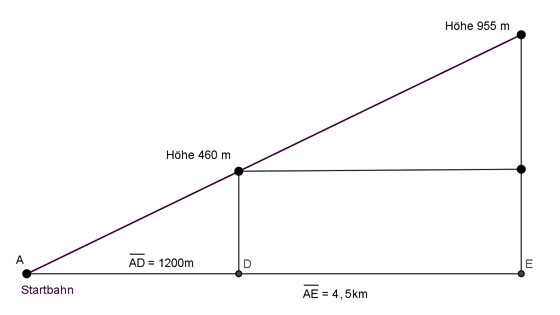

Lineare Funktionen Aufgabe 31 Ein gleichmäßig ansteigendes Flugzeug befindet sich 1 200 m nach dem Start auf einer Höhe von 460 m. 4,5 km nach dem Start auf einer Höhe von 955 m. a) Berechnen Sie, wie schnell das Flugzeug steigt. b) In welcher Höhe liegt die Startbahn? a)  1 200 m = 1,2 km Höhenzunahme 955 m - 460 m 495 m m = ----------------- = ----------------- = -------- = Streckenzunahme 4,5 km - 1,2 km 3,3 km m = 150 m/km b) Punktkoordinate abgelesen (1,2|460) h = Höhe in m s = geflogene Strecke in km Punktkoordinaten eingesetzt h = 150 * s + b 460 = 1,2 * 150 + b |-180 b = 280 m